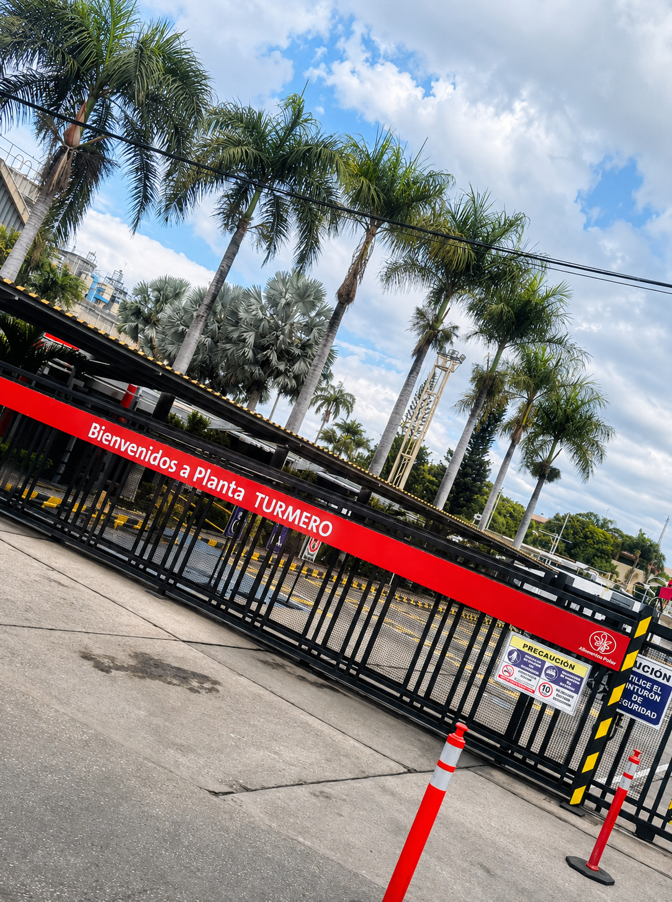

Un viaje al corazón de la manufactura nacional: Estudiantes de la UNITEC viven la experiencia industrial en Alimentos Polar Turmero

El pasado miércoles 17 de junio de 2026, un grupo de 22 estudiantes de la Universidad Tecnológica del Centro (UNITEC), pertenecientes a diversas carreras de Licenciatura e Ingeniería, vivieron una experiencia transformadora tras las puertas de uno de los complejos industriales más emblemáticos del país: la planta de Alimentos Polar ubicada en Turmero.
Esta importante actividad fue ideada, planificada y concretada de forma exitosa a través del equipo de proyecto institucional INNOVART, demostrando el compromiso del movimiento estudiantil por tender puentes directos entre la academia y el sector productivo real.
El grupo de participantes destacó por su diversidad e integración. En esta jornada coincidieron alumnos de múltiples modalidades formativas —virtual, presencial diurno y presencial sabatino—, evidenciando cómo el aprendizaje práctico y la curiosidad profesional unen a nuestra comunidad universitaria en un mismo espacio de crecimiento.

1. Primer contacto: Cultura de seguridad y rigurosidad patrimonial
Desde el instante de la llegada, la experiencia sirvió como una lección magistral sobre cultura organizacional. El protocolo de ingreso estuvo liderado por el personal de Seguridad Patrimonial y de Protección y Control de Pérdidas (PCP) de Alimentos Polar, quienes guiaron a los estudiantes a través de rigurosas inspecciones e inducciones de control de accesos.
Para los jóvenes universitarios, este trayecto inicial hacia la sala de conferencias no fue un mero trámite, sino la comprobación en tiempo real de cómo se ejecuta un estándar internacional de seguridad industrial.